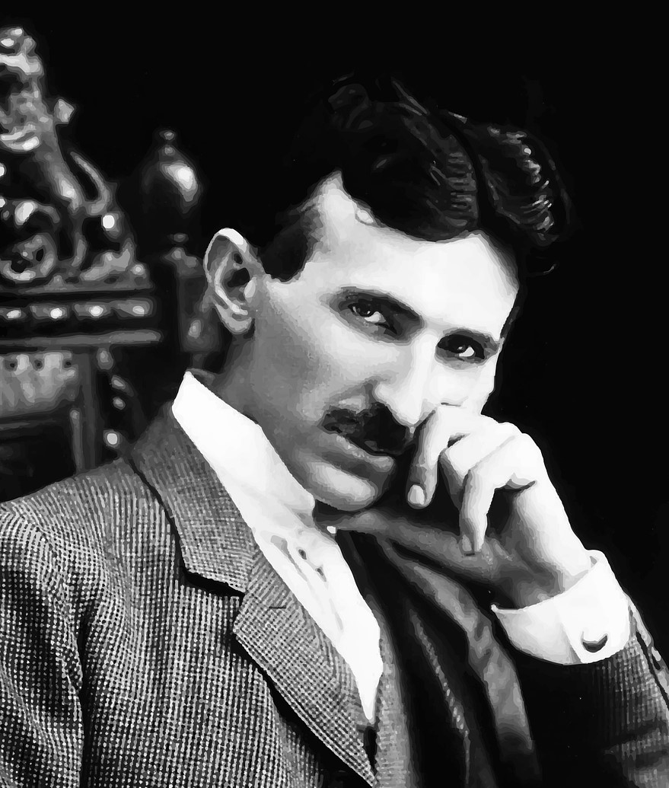

Nikola Tesla (1856–1943) was an iconic inventor and electrical engineer whose work has had a profound impact on the modern world. Born on July 10, 1856, in Smiljan, then part of the Austrian Empire (now Croatia), Tesla is celebrated for his groundbreaking contributions to the development of alternating current (AC) electrical systems. His innovations laid the foundation for modern power distribution and significantly changed the way electricity is utilized globally.
Key Contributions:
- Alternating Current (AC) System: Tesla's development of the AC power system allowed for the efficient transmission of electricity over long distances, which was a crucial advancement over the direct current (DC) systems used previously. This system is still in use today for power generation and distribution worldwide.
- Tesla Coil: One of his most famous inventions, the Tesla coil, is an air-core transformer that can produce high-voltage, low-current, high-frequency alternating-current electricity. It has been used in various applications, including radio technology and medical devices, and is still employed in some modern technologies.
- Wireless Communication: Tesla was a pioneer in the field of wireless communication. He demonstrated the possibility of transmitting radio waves and envisioned a global wireless communication network, which foreshadowed the development of modern radio and television.
- X-Ray Technology: Tesla conducted early experiments with X-rays and made significant contributions to the understanding of their properties. His work in this area laid the groundwork for future developments in medical imaging.
- Remote Control: In 1898, Tesla demonstrated the first remote-controlled boat, showcasing his vision for the potential of remote control technology in various applications.
- Induction Motor: Tesla’s development of the induction motor and transformer enabled the practical use of AC power and significantly advanced industrial and household electrical devices.
Legacy:
Despite his immense contributions, Tesla spent his later years in relative obscurity and financial difficulties. He died on January 7, 1943, in New York City. Today, Tesla is remembered as a visionary inventor whose ideas were far ahead of his time. His legacy continues to inspire engineers, scientists, and inventors.
Notable Quotes:
"The present is theirs; the future, for which I really worked, is mine."
"If you want to find the secrets of the universe, think in terms of energy, frequency, and vibration."
Honors and Tributes:
Tesla’s work has been honored in various ways, including the naming of the Tesla unit of magnetic flux density (the tesla) in his honor. Many institutions, museums, and organizations dedicated to science and technology also celebrate his contributions and continue to preserve his legacy.